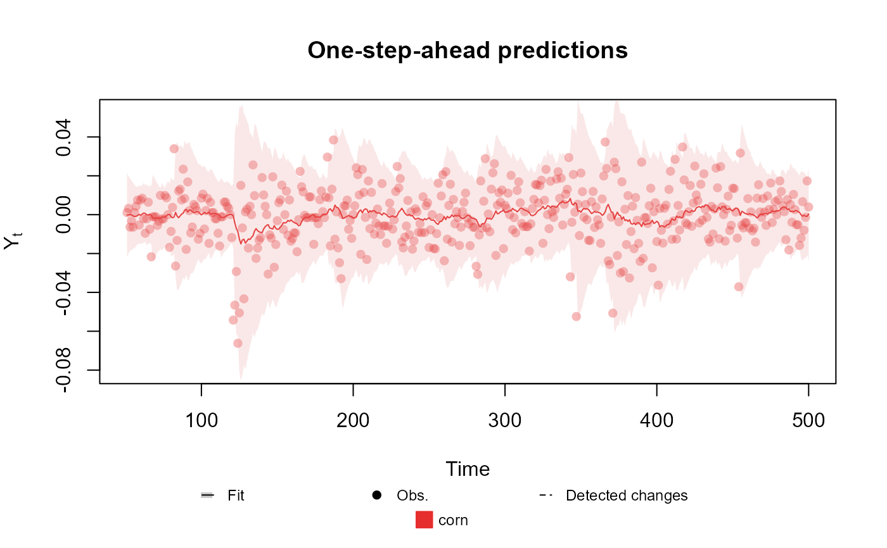
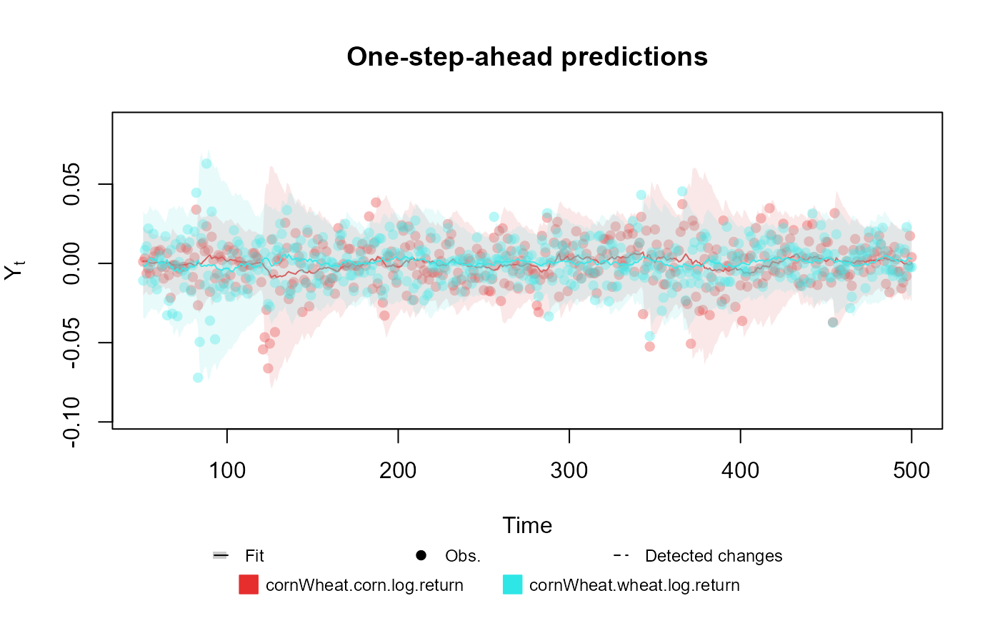

Creates an outcome with Normal distribution with the chosen parameters (can only specify 2).
Arguments
- mu
character: Name of the linear predictor associated with the mean parameter of the Normal distribution. The parameter is treated as unknown and equal to the associated linear predictor.
- V
character or numeric: If V is a character, it is interpreted as the names of the linear predictors associated with the variance parameter of the Normal distribution. If V is numeric, the variance is considered known and equal to the value of V, otherwise, the variance is considered unknown and equal to the exponential of the linear predictor informed in V. If the outcome is a Multivariate Normal, then V must be a matrix and, if the variance is unknown, the elements outside its main diagonal are treated as the linear predictor associated with the correlation between each coordinate of the outcome, otherwise V is treated as the covariance matrix. The user cannot specify V with Tau or Sd.
- Tau
character or numeric: If Tau is a character, it is interpreted as the names of the linear predictors associated with the precisions parameter of the Normal distribution. If Tau is numeric, the precision is considered known and equal to the value of Tau, otherwise, the precision is considered unknown and equal to the exponential of the linear predictor informed in Tau. If the outcome is a Multivariate Normal, then Tau must be a matrix and, if the precision is unknown, the elements outside its main diagonal are treated as the linear predictor associated with the correlation between each coordinate of the outcome, otherwise Tau is treated as the precision matrix. The user cannot specify Tau with V or Sd.
- Sd
character or numeric: If Sd is a character, it is interpreted as the names of the linear predictors associated with the standard deviation parameter of the Normal distribution. If Sd is numeric, the standard deviation is considered known and equal to the value of Sd, otherwise, the precision is considered unknown and equal to the exponential of the linear predictor informed by in Sd. If the outcome is a Multivariate Normal, then Tau must be a matrix and the elements outside its main diagonal are treated as the correlation (or the name of the linear predictor associated) between each coordinate of the outcome. The user cannot specify Sd with V or Tau.
- data
numeric: Values of the observed data.
Details
If V/Sigma/Tau/Sd is a string, we use the method proposed in Alves et al. (2024) . Otherwise, if V/Sigma/Tau/Sd is numeric, we follow the theory presented in West and Harrison (1997) .
For the details about the implementation see dos Santos et al. (2024) .
References
Mariane
Branco Alves, Helio
S. Migon, Raíra Marotta, Junior,
Silvaneo
Vieira dos Santos (2024).
“k-parametric Dynamic Generalized Linear Models: a sequential approach via Information Geometry.”
2201.05387.
Junior,
Silvaneo
Vieira dos Santos, Mariane
Branco Alves, Helio
S. Migon (2024).
“kDGLM: an R package for Bayesian analysis of Dynamic Generialized Linear Models.”
Mike West, Jeff Harrison (1997).
Bayesian Forecasting and Dynamic Models (Springer Series in Statistics).
Springer-Verlag.
ISBN 0387947256.
See also
Other auxiliary functions for a creating outcomes:
Gamma(),
Multinom(),
Poisson(),
summary.dlm_distr()
Examples
# Univariate Normal case
structure <- polynomial_block(mu = 1, D = 0.95) +
polynomial_block(V = 1, D = 0.95)
outcome <- Normal(mu = "mu", V = "V", data = cornWheat$corn.log.return[1:500])
fitted.data <- fit_model(structure, corn = outcome)
summary(fitted.data)
#> Fitted DGLM with 1 outcomes.
#>
#> distributions:
#> corn: Normal
#>
#> ---
#> No static coeficients.
#> ---
#> See the coef.fitted_dlm for the coeficients with temporal dynamic.
#>
#> One-step-ahead prediction
#> Log-likelihood : 1277.594
#> Interval Score : 0.07573
#> Mean Abs. Scaled Error: 0.76327
#> ---
plot(fitted.data, plot.pkg = "base")

# Bivariate Normal case
structure <- (polynomial_block(mu = 1, D = 0.95) +
polynomial_block(V = 1, D = 0.95)) * 2 +
polynomial_block(rho = 1, D = 0.95)
outcome <- Normal(
mu = c("mu.1", "mu.2"),
V = matrix(c("V.1", "rho", "rho", "V.2"), 2, 2),
data = cornWheat[1:500, c(4, 5)]
)
fitted.data <- fit_model(structure, cornWheat = outcome)
summary(fitted.data)
#> Fitted DGLM with 1 outcomes.
#>
#> distributions:
#> cornWheat: Normal
#>
#> ---
#> No static coeficients.
#> ---
#> See the coef.fitted_dlm for the coeficients with temporal dynamic.
#>
#> One-step-ahead prediction
#> Log-likelihood : 2557.703
#> Interval Score : 0.07508
#> Mean Abs. Scaled Error: 0.74795
#> ---
plot(fitted.data, plot.pkg = "base")
